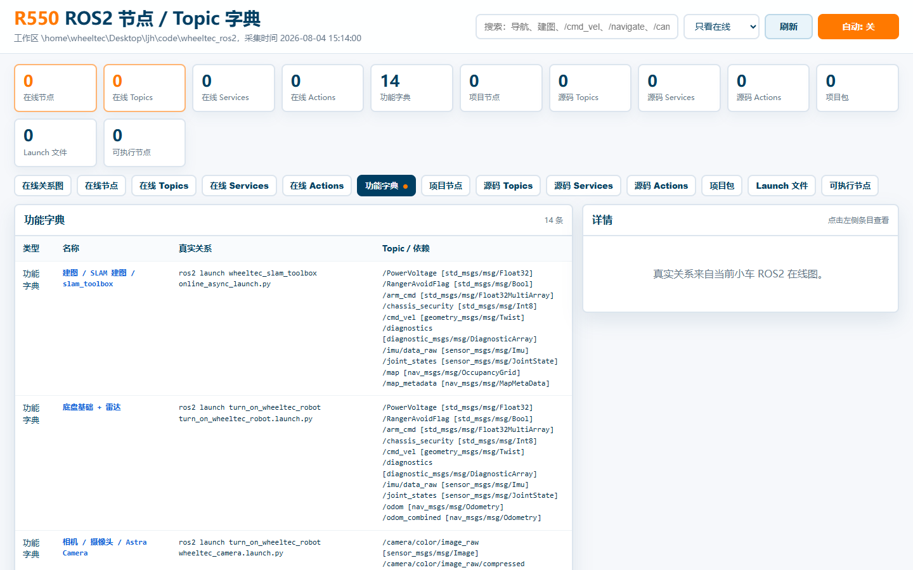
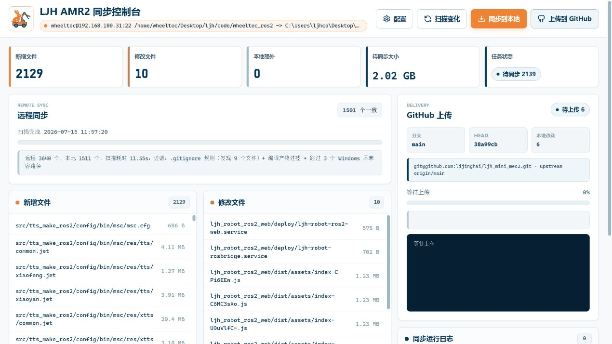

ROS2 Web 控制台
把地图、图层、导航控制、任务状态和系统日志放进浏览器，减少真实机器人调试对单机 RViz 环境的依赖。
Engineering Tools
ROS2 控制台、字典与远程同步工具链
Robot Web Tools 不是单一页面，而是我在真实机器人开发中沉淀出来的一组 Web 工具：用浏览器查看和操作机器人状态，用 ROS2 字典检索节点 / Topic / Service / Action，用同步控制台把远程机器人代码稳定拉回本机并上传到 GitHub。

What It Contains
把地图、图层、导航控制、任务状态和系统日志放进浏览器，减少真实机器人调试对单机 RViz 环境的依赖。
面向 WHEELTEC R550 项目整理功能、节点、Topic、Service、Action 和 launch 信息，让复杂 ROS2 工程可以被快速检索。
通过 SSH / SFTP 对比远程 Linux 机器人项目与本地目录，支持增量同步、过滤、备份、日志和 GitHub 上传。
System Value
机器人项目真正难的地方不只是算法本身，还有调试入口、状态观察、数据复盘、远程文件同步和多人可读的文档化。这个工具链展示的是我把真实机器人开发流程工具化的能力：让问题能被看见、被定位、被复现，也能被整理成别人可以继续使用的工程入口。
Media



Consistency Map
| 主页展示 | 对应项目 | 本页证据 | 作用 |
|---|---|---|---|
| ROS2 控制台 | RabbitRobot_ROS2_Web | 控制台截图与站内详情页 | 浏览器可视化地图、状态、导航和日志。 |
| 字典 | R550 ROS2 节点 / Topic 字典 | 本机字典服务截图与功能表 | 检索真实 ROS2 工程中的功能、节点、话题和依赖。 |
| 远程同步 | LJH Sync Web | 同步控制台 README 截图 | 把远程机器人代码增量同步到本机，并整理上传流程。 |